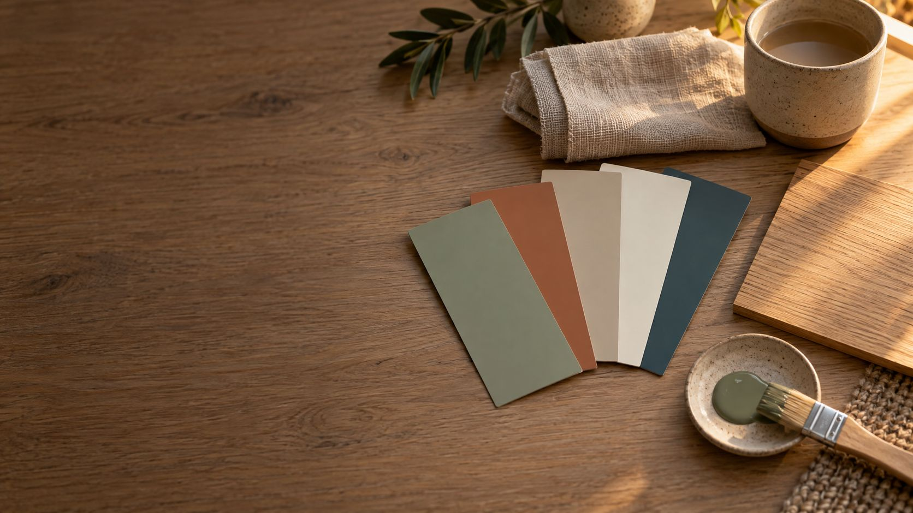

Farbpalette aus deinem Foto
Ein Foto vom Zimmer, vom Lieblingsbild oder vom Sofastoff. Du bekommst die Farben, die darin stecken.
Deine Farben.
Das Foto wird nur in deinem Browser ausgewertet. Es wird nirgends hochgeladen.
Am besten klappt es mit einem Foto bei Tageslicht, ohne Blitz.
Die Farben im Foto
Tipp auf eine Farbe, dann ist ihr Farbwert kopiert.
So verteilst du sie
Die 60-30-10-Regel erklärt der Ratgeber Wandfarbe wählen.
Drei Vorschläge für die Wand
Aus deinen Farben gerechnet: einmal hell, einmal mittel, einmal dunkel. Am Bildschirm wirkt Farbe anders als an der Wand, mach vor dem Streichen einen Probeanstrich.
Welcher Wohnstil passt dazu?
Verglichen wird nur der Abstand der Farben zu unseren sechs Farbkarten. Ein Stil ist mehr als Farbe.
Eigene Website? Dieses Werkzeug bei dir einbinden
Wähle ein Foto von deinem Zimmer, einem Lieblingsbild oder einem Stoff aus. Das Werkzeug zieht die fünf bis sechs wichtigsten Farben heraus, zeigt ihren Farbwert und verteilt sie nach der 60-30-10-Regel auf Hauptfarbe, Nebenfarbe und Akzent. Dazu kommen drei Vorschläge für die Wand und der Wohnstil, dessen Farbkarte am nächsten liegt. Das Foto verlässt dein Gerät nicht.
Inhalt3 Min. Lesezeit
So nutzt du die Farben.
Vom Lieblingsstück ausgehen
Fotografier, was bleibt: das Sofa, den Teppich, ein Bild. Die Palette zeigt, welche Farben schon im Raum sind.
Die ruhigste Farbe für die großen Flächen
Die Hauptfarbe gehört an Wände, auf große Teppiche und wichtige Möbel. Meist ist es der hellste, ruhigste Ton der Palette.
Die Nebenfarbe wiederholen
Vorhänge, Polster oder eine einzelne Wand nehmen die zweite Farbe auf. Taucht sie an zwei oder drei Stellen auf, wirkt der Raum geplant.
Den Akzent sparsam setzen
Kissen, Bilder und Deko dürfen kräftig sein. Ein Zehntel reicht.
Im Raum prüfen
Nimm die Farbwerte als Richtung und vergleich sie im Markt mit echten Farbkarten. Streich ein Probestück und sieh es dir morgens und abends an.
Passende Bilder für die Wand ordnest du im Bilderwand-Planer an.
Häufige Fragen.
Wird mein Foto hochgeladen?
Nein. Das Foto wird nur in deinem Browser geöffnet und dort ausgewertet. Es wird nicht an uns oder andere übertragen und nicht gespeichert.
Wie werden die Farben gefunden?
Das Bild wird verkleinert, ähnliche Bildpunkte werden zu Gruppen zusammengefasst. Die größten Gruppen sind deine Farben, der Anteil zeigt, wie viel Fläche sie im Foto haben.
Warum sehen die Farben anders aus als im Zimmer?
Kamera und Licht verändern Farben. Abendlicht macht alles wärmer, Blitz macht es kälter. Fotografier bei Tageslicht und nimm die Werte als Richtung, nicht als Messung.
Was fange ich mit dem Farbwert an?
Der Farbwert, zum Beispiel #A8B49C, beschreibt die Farbe für Bildschirme. Du kannst ihn in Einrichtungs- und Zeichenprogrammen eingeben oder im Markt mit Farbkarten vergleichen.
Welches Foto eignet sich?
Jedes, auf dem das zu sehen ist, was du magst: dein Zimmer, ein Stoff, ein Gemälde, ein Urlaubsbild. Je weniger Nebensachen im Bild sind, desto klarer wird die Palette.
So rechnet das Werkzeug.
Alle 5 Quellen anzeigen
- Farben finden: Das Foto wird auf etwa 120 Bildpunkte Kantenlänge verkleinert und im Farbraum CIELAB in bis zu sechs Gruppen geteilt (k-Means). Sehr ähnliche Gruppen werden zusammengelegt, Gruppen unter 2 % Fläche entfallen.
- Rollen: Hauptfarbe ist die größte Fläche, Akzent die kräftigste der übrigen Farben, Nebenfarbe die größte der restlichen.
- Wand-Vorschläge: Farbton aus Hauptfarbe, Nebenfarbe und Akzent, Helligkeit und Sättigung auf feste Werte für eine helle, eine mittlere und eine dunkle Wand gesetzt.
- Wohnstil: mittlerer Farbabstand zwischen deinen Farben und den Farbkarten der sechs Stile auf Wohnstile im Überblick.
- Die 60-30-10-Regel und ihre Quellen stehen im Ratgeber Wandfarbe wählen.
Geprüft am 14.11.2026.